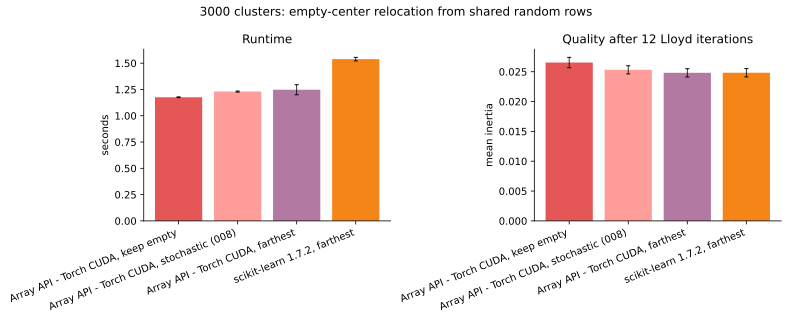
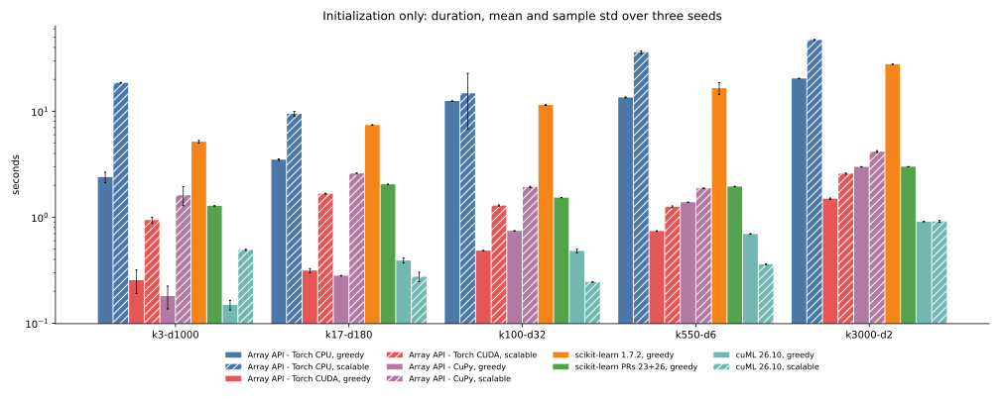
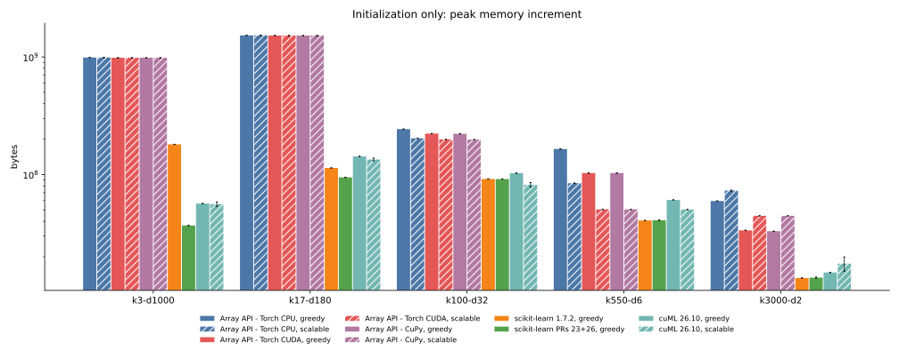
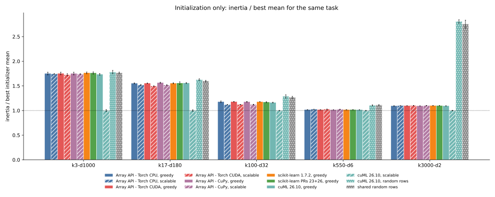

010 — farthest relocation and scalable initialization
This iteration replaces the array-API stochastic empty-center policy with scikit-learn's deterministic farthest-point relocation, adds cuML's other initializer choices, and implements a bounded-memory array-API k-means|| initializer. It consolidates the 105 initializer observations from 009, 75 new initializer observations, and 9 farthest-relocation full fits in results.json. Every new worker finishes inside the 60-second limit.
Changes
Farthest-point empty-center relocation
reassign_empty=True now computes each sample's squared distance from its assigned old center, chooses the farthest samples, subtracts each from its donor sum and count, and installs it as a singleton empty center. This is the unweighted dense policy in scikit-learn 1.7. The random generator is no longer required for relocation.
On the quantized 3000-cluster task, the array-API implementation detects and relocates 46 to 55 empty centers per run. PyTorch CUDA and CuPy return the same inertia to the shown precision. The CPU result differs by at most 0.03% because its float32 reductions have a different order.

| 3000 clusters, shared random rows | seconds | mean inertia |
|---|---|---|
| API CUDA, keep empty | 1.176 ± 0.003 | 0.026543 ± 0.000863 |
| API CUDA, stochastic D² from 008 | 1.230 ± 0.005 | 0.025321 ± 0.000681 |
| API CUDA, farthest | 1.247 ± 0.048 | 0.024816 ± 0.000694 |
| sklearn 1.7, farthest | 1.538 ± 0.017 | 0.024833 ± 0.000694 |
Farthest relocation lowers inertia by 6.50% relative to keeping empty centers and by 1.99% relative to the former stochastic policy. Its mean is 0.07% below scikit-learn's; that gap is within float32 assignment and accumulation differences. The policies now agree, whereas report 008 intentionally compared different relocation rules.
Array-API scalable k-means++
scalable_kmeans_plusplus implements a k-means||-style initializer:
1. choose one row uniformly; 2. run eight parallel D² rounds, drawing 2 * n_clusters candidates per round; 3. assign every sample to the nearest candidate to obtain candidate weights; 4. reduce the weighted candidate pool to n_clusters rows with weighted greedy k-means++.
The fixed sampling budget follows cuML's documented oversampling_factor * n_clusters * 8 budget. Classical k-means|| samples every point independently in each round; this implementation makes a fixed-size weighted draw instead, which bounds the candidate pool and memory. The final weighted reduction follows the k-means|| paper and always returns rows of the input.
The same function runs through the Python array API on PyTorch CPU, PyTorch CUDA, and CuPy. Tests cover deterministic sampling, source-row preservation, option validation, both CUDA backends, and the NumPy-compatible namespace.
cuML 26.10 supports k-means++, scalable-k-means++, its k-means|| alias, and random. The alias is not duplicated in the plots because it selects the same implementation. cuML's scalable output does not consist of input rows: even with outer max_iter=0, its internal candidate consolidation refines the centers. The resulting no-Lloyd inertia therefore measures the initializer that cuML actually returns, but is not a row-selection-only comparison with the array-API implementation.
Initialization duration
All plots show means and sample standard deviations over seeds 0 through 2. The left panel repeats greedy k-means++ from 009; the right panel adds the new strategies.

| implementation | k3-d1000 | k17-d180 | k100-d32 | k550-d6 | k3000-d2 |
|---|---|---|---|---|---|
| API CPU, greedy | 2.39 s | 3.49 s | 12.49 s | 13.51 s | 20.37 s |
| API CPU, scalable | 18.57 s | 9.46 s | 14.77 s | 36.06 s | 47.09 s |
| sklearn 1.7, greedy | 5.15 s | 7.42 s | 11.44 s | 16.48 s | 27.73 s |
| sklearn PRs, greedy | 1.28 s | 2.04 s | 1.53 s | 1.95 s | 3.00 s |
| API CUDA, greedy | 0.25 s | 0.31 s | 0.48 s | 0.74 s | 1.50 s |
| API CUDA, scalable | 0.94 s | 1.67 s | 1.29 s | 1.26 s | 2.58 s |
| API CuPy, greedy | 0.18 s | 0.28 s | 0.74 s | 1.38 s | 2.99 s |
| API CuPy, scalable | 1.61 s | 2.58 s | 1.93 s | 1.88 s | 4.16 s |
| cuML, greedy | 0.15 s | 0.39 s | 0.48 s | 0.69 s | 0.91 s |
| cuML, scalable | 0.49 s | 0.27 s | 0.25 s | 0.36 s | 0.91 s |
| cuML, random upper bound | 0.17 s | 0.08 s | 0.04 s | 0.04 s | 0.04 s |
cuML has no standalone Python initializer API. Its max_iter=0 fit still performs a trailing assignment. For greedy and scalable initialization, the reported duration subtracts a second zero-iteration fit from the returned centers. Random row selection is below that subtraction's timer noise, so its table and plot use the complete zero-iteration fit as an upper bound.
The array-API scalable implementation is slower than its greedy initializer on every task. It deliberately performs eight full-data parallel sampling rounds and a weighted candidate reduction. On CUDA its cost remains 0.94 to 2.58 s and all CPU runs remain under 48 s. cuML's scalable implementation is faster than cuML greedy k-means++ from 17 through 550 clusters and ties it at 3000.
Peak memory

| implementation | k3-d1000 | k17-d180 | k100-d32 | k550-d6 | k3000-d2 |
|---|---|---|---|---|---|
| API CPU, scalable | 944 MiB | 1455 MiB | 194 MiB | 81 MiB | 70 MiB |
| API CUDA, scalable | 939 MiB | 1450 MiB | 190 MiB | 48 MiB | 43 MiB |
| API CuPy, scalable | 939 MiB | 1450 MiB | 189 MiB | 48 MiB | 43 MiB |
| cuML, scalable | 53 MiB | 128 MiB | 78 MiB | 48 MiB | 17 MiB |
| cuML, random | 30 MiB | 74 MiB | 44 MiB | 30 MiB | 6 MiB |
The array-API row-norm feature tile still controls the two widest tasks, so scalable and greedy memory are effectively identical there. Candidate and label storage becomes visible at 3000 clusters: scalable uses about 43 MiB on either array-API GPU versus 31 to 32 MiB for greedy initialization. cuML scalable stays below 128 MiB.
Meters remain backend-specific: PyTorch and CuPy allocator increments above device-resident input, CPU fresh-process VmHWM, and 1 MiB nvidia-smi samples for cuML. cuML memory includes its trailing assignment and cannot be subtracted.
No-Lloyd quality

The plot divides mean inertia by the best initializer mean on each task. The shared random-row baseline appears only on this quality figure.
| implementation | k3-d1000 | k17-d180 | k100-d32 | k550-d6 | k3000-d2 |
|---|---|---|---|---|---|
| API CPU, greedy | 1911 | 291.8 | 31.51 | 1.086 | 0.02145 |
| API CPU, scalable | 1901 | 285.3 | 29.91 | 1.096 | 0.02151 |
| API CUDA, greedy | 1912 | 292.0 | 31.53 | 1.086 | 0.02150 |
| API CUDA, scalable | 1884 | 281.1 | 29.97 | 1.097 | 0.02157 |
| API CuPy, greedy | 1911 | 294.1 | 31.48 | 1.086 | 0.02144 |
| API CuPy, scalable | 1900 | 285.2 | 30.00 | 1.097 | 0.02156 |
| cuML, greedy | 1893 | 292.9 | 31.08 | 1.085 | 0.02145 |
| cuML, scalable | 1092 | 188.0 | 26.76 | 1.069 | 0.01960 |
| cuML, random | 1944 | 305.8 | 34.41 | 1.182 | 0.05502 |
| shared random rows | 1924 | 300.3 | 33.94 | 1.189 | 0.05396 |
Array-API scalable initialization improves on array-API greedy k-means++ by 2.2 to 3.7% at 17 clusters and 4.7 to 5.1% at 100 clusters. It is effectively tied on the isotropic 3-cluster task and is about 1% worse at 550 clusters and 0.3 to 0.6% worse at 3000 clusters. More parallel candidates do not guarantee a better seed after weighted reduction.
cuML scalable has the best objective on all five tasks. The largest gap is the 3-cluster, 1000-feature noise task, where its internally refined centers reach 1092 versus approximately 1900 for row-only initializers. That result should not be read as a faster implementation of the same row-selection algorithm; cuML's candidate consolidation returns non-row centers.
Conclusions
- Array-API empty-center handling now follows scikit-learn's deterministic
farthest-point policy and matches its 3000-cluster objective within 0.07%.
- The array-API k-means|| implementation is portable across PyTorch CPU/CUDA
and CuPy and keeps every new run within the 60-second bound.
- Array-API scalable seeding improves no-Lloyd quality most clearly at 17 and
100 clusters, but costs more time and does not improve every task.
- cuML scalable initialization is both fast and consistently best in
no-Lloyd inertia, partly because its internal consolidation returns refined centers rather than dataset rows.
- Random selection remains useful as a quality baseline, not as a competitive
initializer on the structured 3000-cluster task.
Previous: k-means++ without Lloyd. Index: journal.